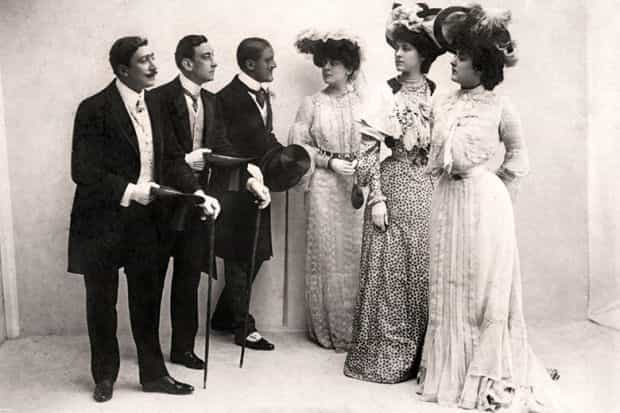
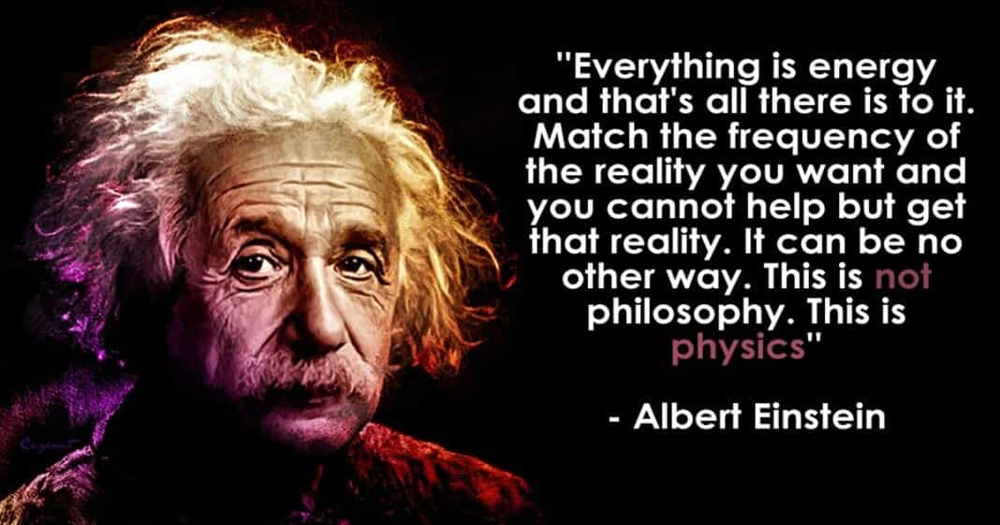

As I read a lot of the pieces and comments on ROK and other masculinity-based websites, there seems to be a lot of griping about the general quality of women out there who would be reasonable relationship material. And rightfully so, all things considered.
Yet, while it is true that most modern women, at least in the West, are socially engineered to be inept and arguably useless life partners, the truth is that not all women are of the same ilk. This is because quality comes to quality and as the old saying goes, water seeks its own level, regardless of how times change. You will always find quality, regardless of the period you find yourself in.
I recently had a young man I’ve known for the past decade call me up regarding a break-up with his long-time girlfriend. Understandably, he was devastated following her leaving him out of the blue after six years together. As he sulked in his misery and poured out his sorrows, looking for advice, I changed gears and got him thinking from a much broader spectrum about his predicament.
First, I asked him to write down his top three life values. ”What do you stand for?” I asked him. Unless you are able to clarify and identify what your utmost values are in life, how would you expect a woman with similar values to come your way? Why shoot randomly in the dark when you have the option of turning on the lights and removing your own blindfold? Besides, three is a good, solid number. If you can list three core values that you reside by, clarity comes into the picture and you will be able to navigate toward women that share and appreciate such values. And remember the law of life: value always comes to value, just as water seeks its own level.
I recalled a very useful approach that was espoused by acclaimed life coach Tony Robbins in an audio series that I listened to back in 2007 when I was suffering from burnout. In this series of life-altering monologues, Robbins talked about writing down all of the attributes that you wanted your future mate to have. No matter how vain or trivial, write down everything that comes to your mind. Then go over that list a second time with some deeper thought and check off only the attributes and values that are absolute musts; those without which the deal if off.
Once you can pinpoint exactly and precisely what you are after and what you need, the end game becomes a lot clearer. But you must write it down on paper, because only then does it become a goal. Up until then, it remains simply a wish inside of your own head.
Quality comes to quality
As I talked to this heartbroken young man and as he listened, I offered him an extended word of advice which mirrors that dream list aforementioned: ask yourself, am I the kind of man that such a hoped-for woman would be drawn to? If the answer is ”no” or ”I’m not sure” then you’d best man yourself up and get busy working on the minuses in your person that would inhibit such a union.
Once you recognize the qualities and attributes you are truly after, you need to start asking yourself where women of that specific ilk spend their time. What is their turf, as it were?
Whereas over 50 years ago, 80-90% of the women were relationship material, the inverse is true today. Yet, there is still that 10-20% demographic which are viable, and that shouldn’t be discounted. On the contrary, that minority demographic should become your target and hunting grounds. The real question is: where do these elusive, quality females of the species reside so one might find them? Life isn’t as complex as we oftentimes make it, guys. Let’s use logic to break it down.
If you are looking for a woman with high moral character, the answer might very well be a church or a humanitarian cause. If you are looking for a woman who takes care of her physical appearance and condition, your answer may very well reside in a beauty salon, a gym, or a sports team. If you are looking for a woman with traditional cooking and homemaking skills, your answer may very well be found on an internet forum that caters to such things, or a cooking class in your neighborhood. If you are looking for a woman who is empathetic and kind, how about a nursing student? Think outside of the box. Don’t be too proud to walk into a cooking class and pick up some new skills yourself. Besides, who knows what you might find as you let your testosterone confidently do the talking.
Change your mindset
When I read a lot of the comments here at ROK, I sense a lot of guys have abandoned hope. They feel that there are no good, quality girls out there. At all. This, however, is an absurd and erroneous notion. Plus, abandoning hope does you absolutely no favors, as cynicism steps in. And do you think anyone in their right mind is drawn to cynicism? Remember, like attracts like. You get more of what you focus on.
This brings me back to value—the value in one’s own self. If you, my friend, do not exude value, how the do you expect a woman of high value to come your way or be drawn to you? Water seeks its own level. They’re not called ”diamonds in the rough” without reason. I’m not talking about hypergamy. I’m talking about logic and reason.
Even King Solomon, the wisest king in the history of Israel, knew this and acknowledged it back in his day, when he said: ”A wife of noble character who can find? She is worth far more than rubies. Her husband has full confidence in her and lacks nothing of value. She brings him good, not harm, all the days of her life.” (Proverbs 31:10-12)
I told this young man to place all of the things about his ex into the scales, as it were, and weigh out the positives versus the negatives. Now everyone has pluses and minuses, but if the negatives honestly outweighed the positives, good riddance! We, as men, have a personal responsibility to utilize our logic and common sense. We are not predominantly emotionally-driven. Let your emotions bleed to get it out of your system, but then move on! It was for your betterment and to your advantage that things didn’t continue.
Some of the best relationship advice I ever got
Only through trial and error did I personally find my own diamond in the rough after nearly forty years of life. I don’t say this to imply that somehow I have the perfect relationship. No, relationships are tough even if you manage to get fortunate enough to find a pliable girl. But it was my trek to finding a keeper that taught me the base rules and by-laws of proper selection. It’s precisely these that I’d like to share with you from personal life experience.
I became increasingly selective and focused after each ended relationship, honing in on the qualities and attributes that I truly held to be musts. I recognized the negatives in each terminated relationship, but I didn’t focus on them. Because like attracts like. Instead, I opted to pinpoint that things that worked for me. The things that really mattered and which I desired.

I recall an actress from Los Angeles that wrote me back in the days when MySpace was still relevant as a form of social media, before the boom of Facebook. She had noted some of my comments and blogs at the time relating to women. I voiced some of my own frustrations in my writings back then, and in turn, this unknown actress took the time to respond with some of her own sentiments to my writing, which proved to be highly constructive.
Firstly, she buttered me up by commending me on the seeming strength of character that she sensed in me. I liked the sound of that, and my receptors were open. Only then did she give her words of advice to me. Don’t talk about the things that you are against, she urged me, speak about the things that you are for.
This was some of the most valuable advice I’d ever received in my life. This actress went on to expound that, indeed, like attracts like, and if I wanted to draw the quality of woman into my life that I was truly after, I needed to resonate a message that would compel her toward me. Being negative and critical was not going to take me to my desired destination.
I let this LA lady’s words of wisdom sink in over the next couple of days, but only after I was fully convinced of her exhortation. It made a world of sense. And as is the case with all things we come to recognize as truth, we are responsible for conforming to that corrected understanding. Anything else would be self-deception and self-sabotage.
Over the coming years, I altered my status texts on Facebook after I moved on from MySpace. I made a mental note not to share negative sentiments about women or about relationship issues. Sure, if something really stuck out or served as a good example, I’d post about it. Otherwise, I’d play it smart. In doing so, I watched my social media followers change. I paid attention to those that were liking my older posts where I would gripe. As I shifted to positive-minded posts, even if they would pertain to the same issues as before, my social media engagements began coming from a new follower base. Like began to attract like. The negative-minded no longer gave me thumbs up for my positive-minded, constructively-crafted postings. And so the snowball was set into motion.
The payoff
Over the years, I found women of quality more often than not to get involved with. Save a few duds when I was downright stupid and let my lusts do the walking, I invested my time in relationships with women who had things to offer that I valued and truly looked for. I found the girls that cooked, that went to the gym, the ones who were empathetic. Even in Finland, the promised land of sexual equality and feminist propaganda galore, I managed to find girls that carried traditional characteristics and qualities. This was only possible due to the fact that I was tuned into what positive qualities I was honestly looking for in the fairer sex.

As is the case with all things in life, I learned through trial and error with women. Things didn’t work out for any number of reasons, and that’s fine. Yet, every single one of my serious relationships have been with women who offered traditional female skills and attributes to the relationship.
When I decided to get married in 2013 at the prime age of forty, I did so because I found an Eastern European girl from Romania who believed in the traditional roles of men and women in relationships. I found a woman who wanted the man to wear the pants and she was happy to wear the dress. And even in this case, it was because of my established character that a common Facebook friend told my wife-to-be about a man in Finland who doesn’t smoke or drink and is a solid guy. The foundation that I had laid out, even on social media, choosing to change my tone to being positive and constructive, although I was still edgy and direct, paid dividends in the long run.
I tell you all this, because a lot of guys out there need to get their heads out of their asses. They need to start applying better psychology, not just in the hopes of finding a good life-mate, but also in terms of making their personal lives better. Whining and complaining only makes you feel like shit.
If you want to land a keeper, have the fortitude and stock that she’d expect. Girls of high, righteous caliber don’t come easy. Then again, you wouldn’t value them if they did.
Read More: 6 Warning Signs A Girl Isn’t Worth A Relationship